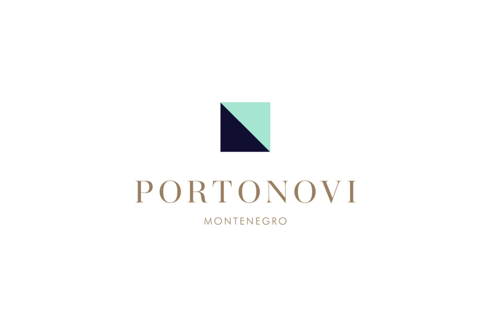

Geodetski stručnjaci s 11 godina iskustva
Vaš pouzdan partner u katastarskim uslugama!
Čime se bavimo
Legalizacija objekata
Geodetski snimak i elaborat za legalizaciju izgrađenih objekata.
Izrada geodetskih podloga za projektovanje
Ažurne podloge sa terenskim snimanjem za izradu projektne dokumentacije.
Dioba parcela
Podjela katastarske parcele na više parcela, sa elaboratom za upis u katastar.
Kompletiranje urbanističke parcele
Formiranje urbanističke parcele od jedne ili više katastarskih parcela.
Etažna razrada objekta
Određivanje posebnih djelova objekta (stanova, lokala) za upis etažne svojine.
Snimanje objekata i uknjižba u katastar
Snimanje izgrađenog objekta i priprema dokumentacije za upis u katastar nepokretnosti.
Kako radimo
Razgovor i pregled dokumentacije
Utvrđujemo šta vam je potrebno i šta već imate.
Snimanje na terenu
Mjerimo i obilježavamo parcelu ili objekat.
Izrada elaborata
Pripremamo dokumentaciju u skladu sa propisima.
Predaja katastru
Pratimo postupak do upisa u evidenciju.
Povjerili su nam se




Imate parcelu ili objekat koji treba urediti?
Opišite nam situaciju. Javićemo se i reći koja dokumentacija je potrebna.